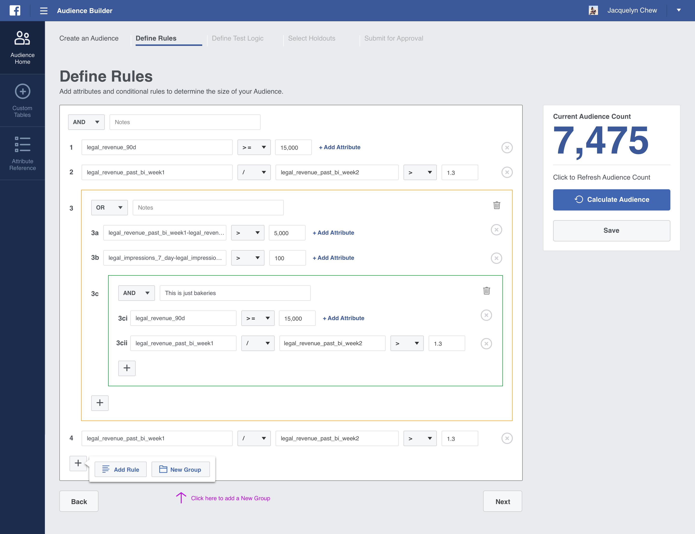
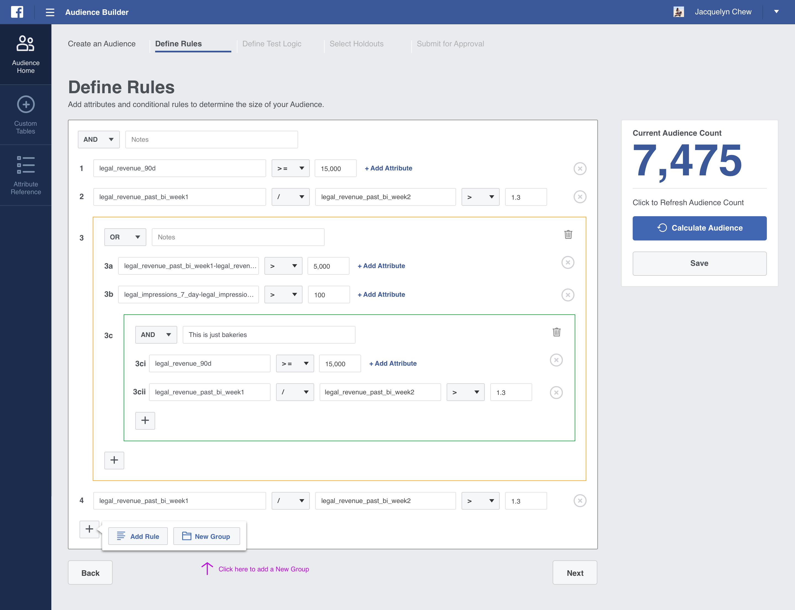

|
| Read the story below | Jump to spoilers |
Facebook as a platform has immense reach and is an increasingly important place for small and medium sized businesses to leverage for marketing. Due to this growth, Facebook’s Small & Medium Business (SMB) marketing team was dealing with growing pains in terms of keeping up with the demand when it came to generating and managing campaigns. This business unit was built with a grass roots approach and had crafted processes on the fly to keep up with demand but everyone knew it was not scalable long term.
We partnered with Facebook’s team and took a people-first, human-centric approach to building their new platform. In doing so, we identified over a dozen different processes split across tools required to launch ad campaigns. Our approach harmonized these experiences into one unified platform with role-based activities. In the final sprint of the engagement, we built an enhanced dashboard experience with a global view of campaign details and a data-rich front-end.
I managed the project from the start and had to present to the full SMB team. I would also provide a quick highlight of the schedule up front to set the stage before the presentation itself so that everyone knows where we are in the project.

DISCOVERY
To build products that people love, you have to establish a meaningful understanding of the people themselves.
In order to do this, I set out to understand the SMB team’s current workflow. This consisted of one-on-one interviews that involved speaking to Marketers and Analysts and observing their current daily process. It was helpful to see how they used multiple tools to perform very simple actions. Since we had no direct access to these products ourselves, we were to able to observe their frustrations and pain points first hand. We were shocked at how many processes were performed manually and required deep SQL building skills with arcane interfaces. This ultimately made work for the SMB unit inefficient and introduced lots of errors.


CURRENT TOOLS
In addition to understanding users and their processes, it was important for us to audit the existing toolset t0 learn the individual features and find opportunities for efficiency and simplification.

Besides working with the actual future end users of the product, it was important to sync up with the builders. Working with the lead developers, we went over the flow of information as it was currently configured. At a fast break pace that is Facebook, not everything was properly documented so we actually helped the developers learn to look at the big picture.

In order to build a product, you have to understand how a user works from start to finish. This can be helped by building out a user journey map so that everyone on the design team can empathize the various steps of the user’s process. (top image)
Once we had a high level view of the journey, we focused on the more granular task of how the SMB team would need to build campaigns from start to finish. Creating a flow diagram of this process allowed us to identify all the potential interactions necessary for Marketers. The tasks consisted of creating marketing campaigns, monitoring campaign results, and creating reports for stakeholders. (bottom image)


Before jumping into design applications, we took to Facebook whiteboards to go through how the content and interaction would flow together. This involved everyone getting their feedback heard and iterating on ideas in real time.
This iteration process led to quick and clear consensus for our team as well as for the Facebook stakeholders. It helped in planning the right strategy to pursue next and what approach fits within the allotted timeframe allowed for the project.

The homepage displays all of the existing campaigns. Every user has the ability to see her own portfolio in a single view and use the dropdown to view other portfolios by other Channel Marketers and Analysts to reference. The user can also duplicate any campaign from any portfolio and customize to create a new one.


Once we became confident on our approach, we jumped into Sketch and started creating the screens that were talked about in meetings, requirements documents, and workflow sessions.
We initially tackled the problem by providing a couple of concepts for the Facebook team to choose from. This approach helped them feel included in the design process and engaged their participation at a greater level.
The paradigm is a step flow process to build a campaign. It starts out by setting up the name, description and parameters, then building nested SQL queries to be submitted for approval.
 


When the new campaign is ready for approval, the user can select a specific Analyst or submit it to any random Analyst for approval. The Analyst will be notified via email where he can then provide feedback, test its logic and/or approve to publish from the tool.

Only for Analysts, they can create custom tables that will show up in the query building stage.


Attribute reference is a section for all users to learn more about each particular attribute that are used to build the campaign queries. Additional information are provided such as a brief description, data type and valid values.
For Module #2, individual campaign cards can be starred to display at the top of the view and can be expanded so users can dive into each campaign in more detail.

We introduced a deep filtering process that allows users to customize the view based on the data that is most important. As filtering is done the graphs update to show how the data relates to the default information.

We provided users with the ability to create multiple tabs to have multiple displays of information within one portal.

| All the screens were stitched together in Invision as a final deliverable. The developers we were working with had not worked with proper specifications in the past and so to help them out, we also documented all the details they needed to build the UI. Checkout the prototype here. |

|
Was it helpful?
The Facebook SMB team has been exploding in growth and needed proper tools to support them. Our app was built in record time and we received great feedback in terms of its overall success. Although there were no sharing of actual metrics, the entire SMB team presented a thoughtful thank you email for all our hard work and the ability to greatly increase the number of customers that they helped.